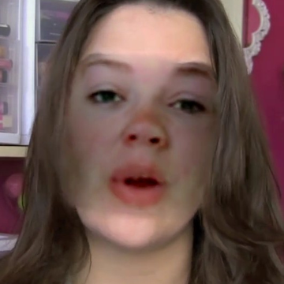
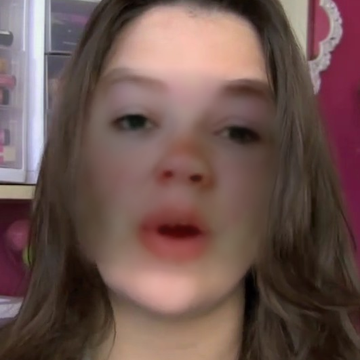

The model's decision is fake (score 1.00). The evidence is concentrated on the mouth (mean evidence 0.99). The score is the model's raw output, not a calibrated probability.
✓ H1–H6 match the record✓ G7–G9 no score misuse
Training, once, offline
genuine
as recorded
+
smoothed view
forged

as recorded
+

smoothed view
Skin smoothing is shown to both classes, so it cannot become the forgery cue. Genuine: FF++ frames and FFHQ originals. Forged: FF++ forgeries and 61,510 part-level edits with exact footprints (the evidence head's targets). Beautified: renders of two retouching services.
neural networkcode with fixed ruleschecks · steps 1–4 run in the browser